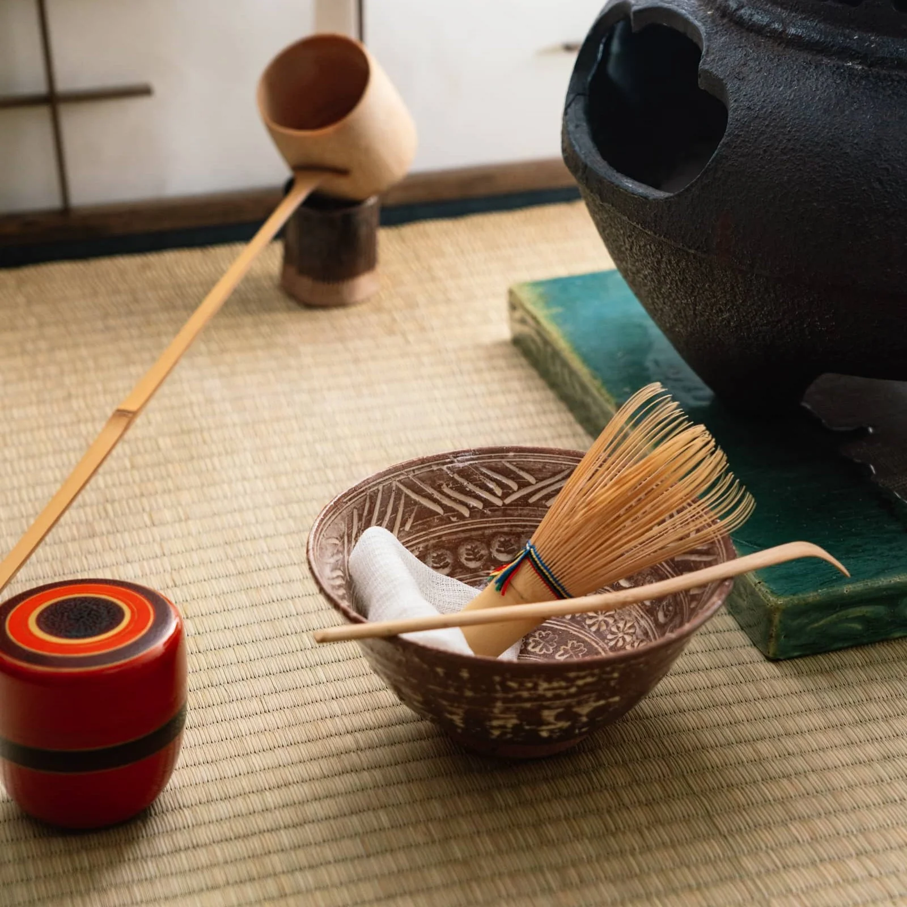

Back in China before Japan learn Tea Ceremony, They're called 'Chinese Tea Ceremony' that reflects the heart of the Chinese Cultures by brewing tea's and show respect, provide hospitalities and display Chinese roots of their Traditions in society which it's also an important part of their Chinese Culture for over decades. In Japan, they called the Ceremony 'The Way Of Tea', which becomes a part of tradition in Japan after being introduced which it's a ceremony for preparing and consume green tea in their tradition tea room.

The purpose of their Tea Ceremony is similar by serving green tea, enjoy hospitality services by the host in daily life. In a current world, the Tea Ceremony are now open for diversities where it can be learned and practice as a hobby, tourist are able to experience it instead of isolating it from the world, they're offered by varities of organization across Japan such as Culture Centers, Hotels and many more. Click to learn more about the Tea Ceremony
Tea Ceremony Tools
The First part of the ceremony the guests will be serve by the host of a light meal seven Courses (Keiseki) In their tea room, they don't just use any common tools to prepare for tea such as kettles and so on. After choosing Koicha Thick Tea and a Lighter Tea Usucha from their Tea Container (Chair) to serve the guests firstly they use Tea Bowl (Chawan) which the host needs to wash and wipe the bowl using certain cloth tissue and clean other tools such as the Tea Scoop (Chasaku) and the Bamboo Whisk (Chasen). After the host take some of the tea powder from its container and pour out into the bowl, adding hot or warm water and then whisk until getting the tea to get a "Jade-Foam". The guests will pick up their tea on their knees, bow down and hold the bowl in the palm supporting by both of their hands which the guests will praises the Tea Aroma. Which then wipe where the guests sip and passed the bowl to the next guests and it will be repeated cycle until the very last guest, in a very same way.
Etiquette
Participating Tea Ceremony in Japan requires strict etiquette and rules that must follow, this is to show that you respect and felt deeply appreciation for the host's effort from the ocassion and the others presence. Rules such as the guest...
- 'Must bring White Socks' since it shows that bring it can be a sign of respect and thoughtful for your host by changing upon entry to avoid the tea room getting dirty before stepping inside.
- 'Bring and Carry a Fan', which used them according to ceremonial actions such as creating connection between the guests each of themselves which is greeting and addressing certain person by placing down infront of their knees when seated on the floor matte or holding fan in their hands infront of them while standing up.
- 'Pay Respects to the scroll and then the flowers',
- 'Eat Sweets completely before the host Serves your Tea'
- 'Presenting Bowl of Japanese Tea with the front facing you', and lastly
- 'Bowing back to someone when they bows to you'.
Each of the rules contains their reasonable actions and outcomes since it's a special occasion it's essential to follow and acknowledge the rules.
Tea Ceremony ritual weigh around Harmony, Respect, Cleanliness and Peacefulness, where these are the rules that must follow to participate in the Ceremony.
- Greeting Guests by Cleaning themselves at a stone basin before entering the room of Tea Ceremony
- The Guest must Appreciate the Tea Ceremony Environment by observing The Scroll, Flowers & Utensils
- Serving a Meal or Wagashi(Japan Traditional Sweets) to balance Matcha's Tea Bitterness for the guests
- The Host delicately prepare the tea with careful measurements, sifting and whisking.
- Each of guests will rotate Tea Chawan before taking a sip to show Respect of the design for the Hosts
- To finish the Tea Ceremony is by cleaning the utensils and expressing appreciation
Click to see the Moment of Ritual during Tea Ceremony